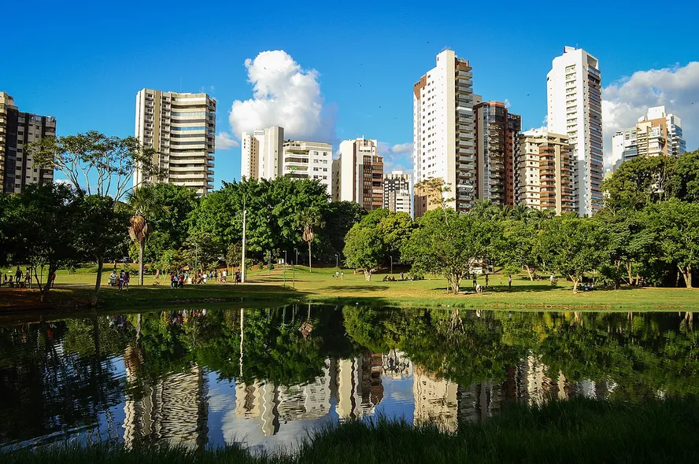

Goiás é um estado da região Centro-Oeste do Brasil, cuja capital é Goiânia; possui clima tropical e é predominado pelo bioma Cerrado, destacando-se economicamente pela agropecuária (como soja, milho e pecuária) e culturalmente pela música sertaneja e pratos típicos como o pequi.
